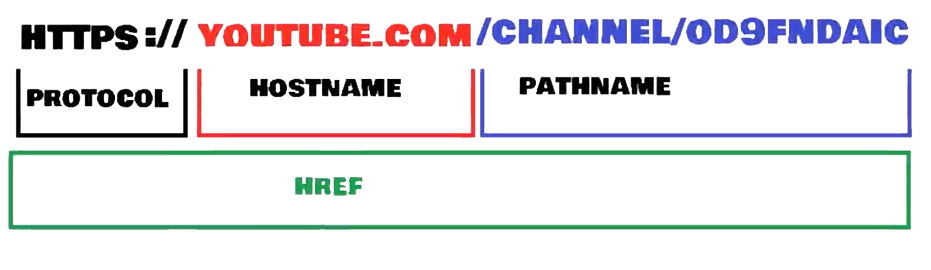

Hace referencia a la ventana de windows, tiene algunos metodos y propiedades como:
-Window.open( ): Abre una nueva ventana, por ejemplo: window.open(youtube.com) lo que abre youtube
-Window.close( ): Cierra la ventana actual, o la ventana en la que se llamo
-Window.closed: Nos devuelve true si la ventana se cerró, o false si la ventana está abierta
-Window.print( ): Abre el cuadro de dialogo para imprimir
---- Screen ----
Solo son propiedades de lectura, no se pueden modificar
window.screen: Nos devuelve las propiedades de la pantalla, son varias, y podemos mandar a llamar una por una asi:
window.screenLeft: Nos devuelve la distancia en pixeles entre el borde izquierdo del navegador y el borde izquierdo de la pantalla, tamnien funciona con screenTop
window.screenWidth: Nos devuelve el ancho completo de la pantalla
window.scrollY: Nos devuelve la cantidad de pixeles que se ha desplazado en el documento, funciona lo mismo con scrollX
window.scroll( ): Nos desplza hasta el lugar que le indicamos dentro del parentesis, ponemos separado por comas primero el el eje X y luego el eje Y //NOTA: tambien existe el scrollTo() que es casi igual
---- location ----
window.location.href: devuelve la URL de la pagina actual
window.location.hostname: devuelve el nombre de dominio de la pagina actual
window.location.pathname: devuelve la ruta y el nombre de archivo de la pagina actual
window.location.href: devuelve el protocolo de la pagina actual https o https
window.location.assing( ): carga un nuevo documento

Para agregar un evento primero se llama la clase del boton, se agrega un addEventListener( ) al cual se le pasa como parametros el evento en comillas y la función que se va a ejecutar cuando el evento dentro de las comillas ocurra
Ejemplo
const button = document.querySelector(".button");
button.addEventListener("click", function(evento){
//Codigo a ejecutar
}
)
Si llamamos una funcion no se pueden usar funciones flecha
---- Como saber a que boton se preciono el clic ----
const botones = document.querySelectorAll(".botones");
const cuandoSeHaceClick = function (evento) {
console.log("El texto que tiene es: ", this.innerText);
this.style.borderColor = "blue";
}
botones.forEach(boton => {
boton.addEventListener("click", cuandoSeHaceClick);
});
//Si tengo un botón dentro de un contenedor y ambos tienen un eventListener, se ejecuta primero el boton que esta adentro del contenedor, los elementos hijos primero vaya, para evitar esto, se puede poner 'true' antes del parentesis de cierre del evento
Y, si tenemos este contenedor y el boton dentro del contenedor ambos con eventListener y al precionar el botón no queremos que se propague o que se siga ejecutando el eventListener del contenedor podemos usar event.stopPropagation( ) ese event es el nombre del parametro que le pasamos a la funcion
---- Otros eventos ----
---Eventos de mouse---
-dblclick: ocurre cuando hay un doble clic
-mouseover: cuando el puntero se mueve dentro del elemento o sobre uno de sus hijos
-mouseout: cuando el puntero se mueve fuera del elemento o sus elementos secundarios
-contextmenu: cuando se preciona el clic derecho sobre un elemento
-mouseup: cuando un usuario suelta el boton del mouse sobre un elemento
-mousemove: ocurre cuando el puntero se mueve mientras esta sobre un elemento
//Y hay mas eventos de mouse
---Eventos de teclado---
-keydown: ocurre cuando una tecla se deja de presionar
-keypress: ocurre cuando una tecla se presiona y suelta en un elemento
-onkeyup: ocurre cuando los dos eventos anteriores hayan concluido consecutivamente
---Eventos de interfaz---
-error: ocurre cuando sucede un error en la carga de archivos multimedia
-load: ocurre cuando un objeto se a cargado, funciona con el elemento window, y sirve para verificar que el sitio cargó completamente
-beforeunload: ocurre justo antes de precionar en un link para ir a otra pagina
-unload: ocurre una vez que se ha descargado una pagina
-resize: ocurre cuando se cambia el tamaño de la vista del documento
-scroll: ocurre cuando se desplaza la barra de desplazamiento de un elemento
-select: ocurre despues de que el usuario selecciona algun texto de input o textarea, ademas, con mas parametros puedo ver que se ha seleciconado del input o textarea
Para más eventos visitar: w3school
---Temporizador---
Ejemplo:
const temporizador = setTimeout(()=>{
document.write("hola");
}, 2000)
Lo que hace es esperar dos segundo y luego imprime algo en pantalla
---Intervalo---
Tambien se puede colocar un intervalo que se repita
Ejemplo:
const Intervalo = setInterval(()=>{
document.write("hola");
}, 2000)
clearInterval(Intervalo)
Lo que ejecuta un intervalo donde cada 2 segundos escribe "hola" en el documento
Y lo podemos detener escribiendo clearInterval(Intervalo)
---Ambos---
Y podemos combinarlos para que algo se ejecute una cierta cantidad de tiempo y luego se detenga
Ejemplo:
const Intervalo = setInterval(()=>{
document.write("hola");
}, 2000)
setTimeout(()=>{
clearInterval(Intervalo);
}, 7000)
Lo que ejecuta el intervalo pero a los 7 segundos se detiene
Se usa cuando queremos controlar algun error (se tiene que investigar mas)
Ejemplo:
try{
ejecutar codigo que posiblemente tenga error;
}
catch(e){
console.log("aqui podemos poner un texto o la e para que nos muestre el error");
}
finally{
investigar lo que pasa con el finally
}
Es una sentencia donde, dependiendo del valor de un parametro, ejecuta un caso u otro
Ejemplo:
let expr = "Banana";
switch(expr){
case "Banana":
console.log("caso 1 banana");
break;
case "Pera":
console.log("caso 2 pera");
break;
default:
no es ninguna fruta;
}
un callback es una funcion dentro de otra función
exp
exp
Alerta: Esta es una alerta